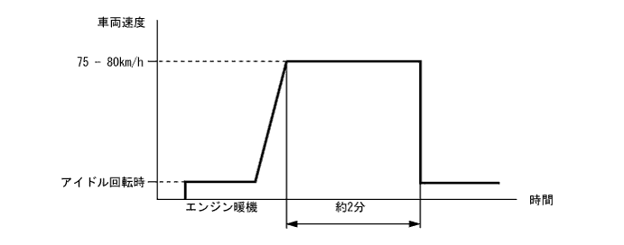
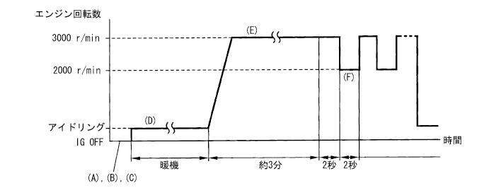
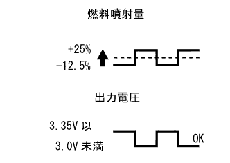

DTC P0420/94 Catalyst Deterioration 1 |
DTC P0430/94 Catalyst Deterioration 2 |
| DTC No. SAE/TCCS | P0420/94 P0430/94 | ||
|---|---|---|---|
| DTC Detection Condition | Diagnosis Condition | When all of the following conditions are met
| |
| Abnormal Condition | Catalyst OSC value is equal to or less than judgment value | ||
| Malfunction Duration | 30 seconds or more | ||
| Trip Count | 2 trip | ||
| Detection Method | Detected 1 times during 1 trips (no detection after judgment) | ||
| Sensors Used for Detection | Main |
| |
| Sub |
| ||
| Inspection Area |
| ||

)

| Fuel Injection Volume | Air fuel ratio sensor output voltage | Oxygen sensor output voltage |
|---|---|---|
| +25 % increase | Less than 3.0 V (rich condition) | 0.55 V or more (rich condition) |
| -12.5 % decrease | 3.35 V or more (lean condition) | Less than 0.4 V (lean condition) |
| Case | Air fuel ratio sensor output voltage | Oxygen sensor output voltage | Inspection Area |
|---|---|---|---|
| 1 |  |  | - |
| 2 |  | |
|
| 3 | |
| |
| 4 | | |
|
| Step 1 | Read DTC |
Connect SST (TaSCAN) to DLC3.
Turn IG ON.
Turn the main switch of SST (TaSCAN) ON.
Check the DTCs by following the SST (TaSCAN) screen display.
| Result | Proceed to |
|---|---|
| Only P0420/94 or P0430/94 is output | A |
| DTCs other than P0420/94 or P0430/94 are also output | B |
|
| ||||
| A | |
| Step 2 | Exhaust Gas Leak Inspection |
Check that there are no exhaust leaks from the exhaust pipe joints and sensor installation areas.
|
| ||||
| OK | |
| Step 3 | Read TaSCAN Data (A/F Sensor Voltage B1S1, A/F Sensor Voltage B2S1) |
Connect SST (TaSCAN) to DLC3.
Turn IG ON.
Turn the main switch of SST (TaSCAN) ON.
Start the engine, turn all accessory switches OFF, and warm up the engine until the engine coolant temperature stabilizes.
Depress the accelerator pedal and maintain 2500r/min for approximately 3 minutes to warm up the air fuel ratio sensor.
Allow the engine to idle.
Following the SST (TaSCAN) screen display, read [ECU Data Monitor] - [A/F Sensor Voltage B1S1 / A/F Sensor Voltage B2S1] and check that the air fuel ratio sensor output voltage is normal.
Accelerate to 60 km/h and check that the output voltage of the air fuel ratio sensor rises (lean condition) when the accelerator pedal is released (during deceleration fuel cut).

|
| ||||
| OK | |
| Step 4 | Read TaSCAN Data (O2 Sensor Voltage B1S2, O2 Sensor Voltage B2S2) |
Connect SST (TaSCAN) to DLC3.
Turn IG ON.
Turn the main switch of SST (TaSCAN) ON.
Start the engine, turn all accessory switches OFF, and warm up the engine until the engine coolant temperature stabilizes.
Depress the accelerator pedal and maintain 2500r/min for approximately 3 minutes to warm up the oxygen sensor.
Race the engine several times at an engine speed of 4000r/min.
Allow the engine to idle.
Following the SST (TaSCAN) screen display, read the oxygen sensor voltage waveform displayed in [ECU Data Monitor] - [O2 Sensor Voltage B1S2 / O2 Sensor Voltage B2S2].
| Result | Proceed to |
|---|---|
| OK (P0420/94 output) | A |
| OK (P0430/94 output) | B |
| NG | C |
|
| ||||
|
| ||||
| A | ||
| ||